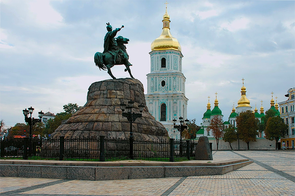

Kyiv historical
Kyiv, one of the oldest cities in Eastern Europe, passed through several stages of great prominence and relative obscurity. Scholars debate as to period of the foundation of the city: some date the founding to the late 9th century, other historians have preferred a date of 482 AD. In 1982, the city celebrated its 1,500th anniversary.